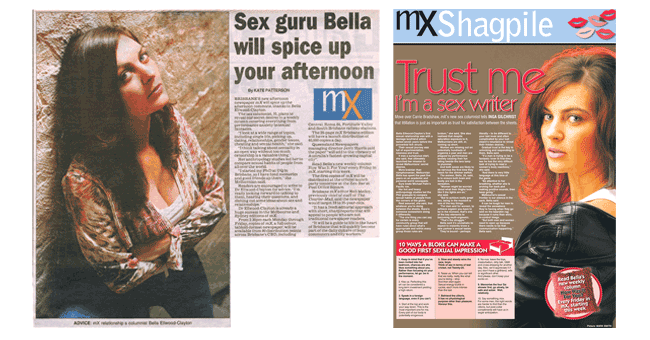

The Huffington Post: ?Pill thrill: the future of female sex drugs,? January
24th, 2014 Link
Sunday Life: ?Raising Sexuality healthy kids,? ? in press
The Hoolpa (online women?s magazine): ?Private school sex scandal? ? expert opinion, Dec
16th
Link
Herald Sun: ?Dangers of online dating? ? expert opinion, Nov 15th
Sunrise (TV): ?Does income reflect sex drive?? ? expert opinion, Aug 17th
Newstalk Radio Ireland, Dublin: ?Female sexuality? ? expert opinion, June.
Stella magazine (UK), ?Why young women are less interested in sex,? ? expert opinion, July
22nd,
2014
Vogue, 'Women and depression,' ? feature article, in press.
The Huffington Post: ?Sexual prime: fact or fiction?? June 12th, 2013
The Huffington Post: ?10 things you need to know about female sexuality,? - June 3rd, 2013
Link
The Huffington Post: ?Sexual Equality? A Long Way Off -- An Anthropologist's Perspective,?
May
31st, 2013
Cosmopolitan: ?Sexually incompatible? - expert opinion, June 6th 2013.
Sunday Life: 'The way we dress,' May.
The Hoopla: 'Designer hormones?how to stay young forever,' feature article, in press.
Cleo: ?Sexologists ? best sexual experience ? - interviewed, May 15th, 2013.
Mother 's get inspired (website): ?Sexuality post-baby ? - interviewed, April 20th, 2013.
Triple M, Rush Hour (radio): ?Sexual myths: true or false? ? - guest, April 18th, 2013.
Practical Parenting: 'Expectations of labor and new baby' ? featured, in press.
Mx:
'First dates: who pays?' – expert opinion, Monday Feb 11th, 2013.
Cosmopolitan
: 'How important is physical attraction?' – expert opinion, January 2013.
NW
: 'The celebrity and the toyboy' – expert opinion, Jan 24th 2013.
Child:
'Sexuality after children,' – feature article, January 2013.
Triple M
, The Rush Hour (radio), 'How to woo women,' –expert opinion, 2012.
Sunday Life:
'What makes women tick in the bedroom?' – feature article, November 18th,
2012.
The Project
(TV): 'Female sex drugs' – interviewed, October 28th, 2012.
Cosmopolitan Pregnancy:
'New baby and women's libido' – expert opinion, October 2012.
Sunday Life
: 'Bringing sexy back–the sex list,' feature article, October 28th,
2012.
Sydney Morning Herald:
'The sex life of Canberra men' – expert opinion, October 10th, 2012.
Madison:
'Man drought?' – expert opinion, 2012.
ABC, Breakfast with Red Symons
, (radio): 'Sex after baby' – interviewed, 2012.
Canberra Times
: 'Doctors should routinely inquire about the sexual well being of new parents' –
featured, February 21st, 2012. Link
QWeekend
: 'Between the covers,' – featured, September 1st, 2012.
Byron Bay Writers' Festival
– speaker, August 3-5, 2012.
The Herald Sun
: 'Neediness in relationships,' –expert opinion, Friday August 3rd, 2012.
Sydney Herald Sun
: 'The role of sex in relationships' – expert opinion, 2012.
Sunday life: '
Why men need sex' – feature article, August 19th, 2012.
ABC, The Karinthy Connection
(radio): Sex drive: in pursuit of female desire' – interview and Bella's top six
songs, July 31st, 2012.
Link
ABC, NSW afternoon
(radio): 'Do we need romance? The rise of erotic literature' – expert opinion, July 31st
2012.
ABC National, The Conversation Hour,
(radio): 'Dr Bella Ellwood-Clayton, Indigo Bloome and Frank Bongiorno' – interview,
July 18th, 2012. Link
The Hoopla:
'Pink Viagra: sex drugs for women' – feature article, 2012. Link
http://thehoopla.com.au/hunt-pink-viagra/
Cosmopolitan Bride:
'Wedding night and honeymoon sex,' – expert opinion, 2012.
Cosmopolitan Pregnancy:
'Sexuality, pregnancy & the new mother' – expert opinion, August 2012.
Women's Health: '
Should you follow your head or your heart?' – expert opinion, June 2012.
Women's Health
: 'Does online dating change our relationship expectations?' – guest debater, June
2012.
City Library, Melbourne
: 'Bella Ellwood-Clayton with Kate Holden' – book event, May 24th, 2012.
Sunday Life:
'Sexual prime' – feature article, May13th, 2012.
Readings, Carlton, Melbourne
: 'Bella Ellwood-Clayton with Monica Dux' – book launch, April 19th, 2012.
ABC National, The Conversation Hour,
(radio): 'Professor Stephen Kline, Dr Bella Ellwood-Clayton and Jane Caro' –
interview, March 10th, 2012.
The Circle
(TV): 'Female sexuality' – interview, March 13th, 2012.
Cosmopolitan Pregnancy: '
Sexual desire while pregnant' – expert opinion, March 2012.
ABC National, Life Matters
, (radio): 'Sex drive: in pursuit of female desire' – interview, February
23rd 2012.
Sunrise
(TV): 'The sex contract' – interviewed, January 12th,
2012.
Womens Health: ‘What's better for your sex life: diet or exercise?’ -
expert opinion, March, 2012.
Hack, Triple J, (radio) ‘Dr Bella discusses women's sex drive’ - guest speaker, February 17th,
2012.
‘The Summer Drive’ with Jason and Flack, Southern Cross Austereo (radio) ‘Best Valentine’s
Day gifts’ - expert opinion, Feb 14th, 2012.
Sydney Morning Herald online, Life and Style: ‘ Relationship overhaul: when to call
it quits,’ - expert opinion, February 2012.
Girlfriend: ‘Love advice in 140 characters or less’ - expert opinion, March
2012.
Documentary: ‘Going the distance: a journey for the heart’ - house
relationship expert, (pilot).
Cosmopolitan: ‘Scents to disguise cheating’ - expert opinion, January 2012.
Mix 106. 5 Sydney (radio) ‘Checking other people out’ - guest speaker, June
6th, 2011.
Cosmopolitan: ‘Cosmopolitan Sex Awards: best erotic fiction,’ - judge. July,
2011.
The Herald Sun: ‘Rekindling relationships’ - expert opinion, July 25th, 2011.
Cosmopolitan Pregnancy: ‘Sex and pregnancy: truth and fiction,’ - expert
opinion, December, 2011.
99.2 (radio) ‘sex after having a baby?’ - expert opinion, April 4th,
2011.
Dizingof: fashion show, unveiling of the winter range - featured guest to be dressed by the
designer and photographed, March 31st, 2011
Brazilian News: ‘Online dating and youth’ - expert opinion, February 17th, 2011.
The Herald Sun: ‘Advice for couples in long-distance relationships’ - expert opinion
(in press)
Women‘s Health: ‘Secrets of a relationship counselor’ - featured, (in
press)
Writers at the Convent: ‘Sex, Love and other Potential Catastrophes‘ chairing talk
with Kate Holden, Bettina Ardnt and Toni Jordan, February 12th, 2011.
Fairfax online video: ‘Spotlight on Ruby Heartstealer and those ‘bunga bunga‘
parties‘; - expert opinion, January 19th 2011.
Cosmopolitan: ‘Men who have baggage’ - expert opinion (Summer 2010)
The Telegraph, Body and Soul: ‘What happens to your body when you kiss’ - expert
opinion, Sept 16th 2010.
Sunday Life (The Melbourne Age, Sydney Sun-Herald): ‘Sexual pot of gold’ –
feature article (in press).
HealthSmart magazine: ‘How to meet someone’ – expert opinion (in press).
Cleo: ‘Coping with embarrassing sex moments’ – expert opinion expert opinion,
Spring, 2010.
Sunday Life (The Melbourne Age, Sydney Sun-Herald): ‘Love is Blind’ – feature
article, July 18th, 2010.
The Canberra Times: ‘Love drugs are no cure for relationship problems’ –
article, June 28th 2010.
(reprinted) The National Times: ‘Love drugs are no cure for relationship
problems’ – article, June 29th 2010.
Cosmopolitan: ‘Hello Kitty vibrator’– expert opinion, June,
2010.
Pyschologies Magazine (London): ‘Popularity of Brazilian waxing and
Hollywoods’ – expert opinion, June 2010.
Cosmopolitan: ‘Problems that arise when women earn more than men’– expert
opinion, June, 2010.
Lilianne Milgram: ‘Reproducing Gustave Courbet’s painting L’Origine du Monde
at the Musee d‘Orsay, Paris ’ – expert opinion, April 2010.
Sydney Morning Herald: ‘Sexist lyrics of Lilly Allen and Katy Perry’ – expert
opinion, Jan 13th 2010.
Tripple R (radio): ‘Internet dating’ - guest speaker, January 5th
2010.
Vogue: ‘The New Elegance’ – expert opinion, Summer
2009.
Cosmopolitan Pregnancy: 'Women’s sexuality pre and post pregnancy' – expert opinion,
August 2009
Cosmopolitan Pregnancy: ‘A Sensual Pregnancy’ – Feature
article, Winter 2009.
FHM: 'Who has the sexiest arms in the AFL?' - Expert opinion, Fall
2009.
Cosmopolitan Pregnancy: 'How can I explain to my partner that my lack
of sex drive has nothing to do with him?' - Expert opinion, Fall 2009.
Women's Health: '38 Relationship Dilemmas We've Solved for You'
- Expert opinion, February 2009.
Women's Health: 'The Art of Kissing' - Expert opinion, February
2009.
Cosmopolitan Bride: 'Problems in the Bedroom in the First Year of Marriage'
- Expert opinion, February 2009.
Women's Health: 'Outdoor Sex' - Expert opinion, December 2008.
105.7 ABC Darwin, Evenings with Melanie Tait, (radio): ‘Why women change their names upon marriage‘
- guest speaker, November 12th, 2009.
Groomsonline.com: ‘About to Propose? Tips for Overcoming
Anxiety’
- Expert opinion, October 2008.
Yahoo! Canada: ‘Texting for Teens’ - Expert opinion, September 2008.
Cosmopolitan: 'The 25 Websites Successful Women Click Everyday’
- Featured, September 2008.
Entertaining Research: 'Who is Dr. Bella?' - Review, September 2008.
Sexual Health Society of Queensland‘s Annual General Meeting, Brisbane, University of
Queensland: ‘Young people and technology‘ - guest speaker, August 25th, 2007.
ERNST & YOUNG (Melbourne) ‘Spice it up? Love and business share a few things in common’
- guest speaker, August 21st, 2007.
FHM: 'Dirty Talk' - Expert opinion, August 2008.
ABC Queensland (radio): ‘the art of giving compliments’ - guest speaker, July, 2007.
The Age: 'Bonk,' by Mary Roach - Book review, May 2008.
FHM: 'Sexual experience of your wife-to-be' - Expert opinion, May 2008.
The Naughty Rude Show, Syn FM (radio). ‘Sex, love and listeners’ questions’
- guest speaker, April 2007.
FHM: 'Sex Toys' - Article, March 2007.
John Lenaric's panel (city library, Melbourne), 'Geek Chic: Love in the cyber world' - guest
speaker, February 6th, 2007.
RMIT University: 'University at the Pub' - guest speaker, December 20th, 2006.
Cultural Space and Public Space in Asia, (Seoul, Korea): 'All we need is love and a mobile phone:
texting in the Philippines' - academic paper, 2006.
In 2006 Dr Bella accepted the role ambassador of Sextxt, a service that provides sexual health
information to Australian youth.
Australian Anthropological Society Annual Conference: Moving Anthropology: Motion, Emotion and
Knowledge (Melbourne, Australia): (Part II) 'Folk Catholicism in the cyber Philippines: The Lord is my Textmate,' -
academic paper, 2004.
The Global and the Local in Mobile Communications (Budapest, Hungary): (Part I) 'Folk Catholicism in
the cyber Philippines: The Lord is my textmate' - academic paper, 2004.
Annual Meeting of the Society for Applied Anthropology (Portland, Oregon): 'Teens, texting and love
in the Philippines' - academic paper, 2003.
Mobile Communications: Social and Political Effects (Budapest, Hungary): 'Virtual strangers: Young
love and texting in the Filipino archipelago of cyberspace' - academic paper, 2003.
| |
|
|
| |

|
Sex and Relationship Columns
DR BELLA
Dr. Bella Ellwood-Clayton was the resident sex and relationship columnist for Sunday Life
magazine, which appears in the Melbourne Age and Sydney Sun-Herald and the
newspaper mX, printed in Melbourne, Sydney and Brisbane. She also answered readers'
letters, advising them about relationships, sexual health and sexual desire. Selected columns
are below.

Sample Sunday Life Columns
Sample mX Columns
-
Dirty talk
-
The big O
-
Love spells
-
Operation good man - part 1
-
Operation good man - part 2
-
Feng shui for the heart
-
The one you pushed away
-
Bimboy
Sample mX Readers' Questions
Creative Writing
To have Dr Bella speak at your organization,
conference, television or radio program,
or for more info, send your request to publicity@drbella.com.au
Bella enjoys discussing love, gender, dating, sexual desire and health,
sex drugs, technology, and how to live sensually.
|
|
|
|
|
|
|
|

{kind=link}
![[1]](Links/CosmoSEPT08Page274.jpg){kind=link}
![[2]](Links/CosmoSEPT08Page275.jpg){kind=link}
![[3]](Links/CosmoSEPT08Page276.jpg){kind=link}
![[4]](Links/CosmoSEPT08Page277.jpg){kind=link}